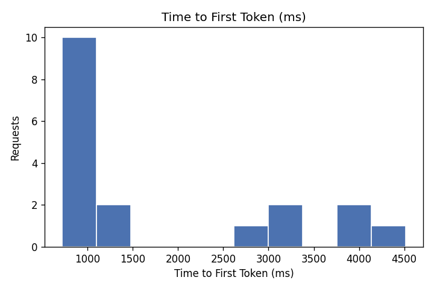
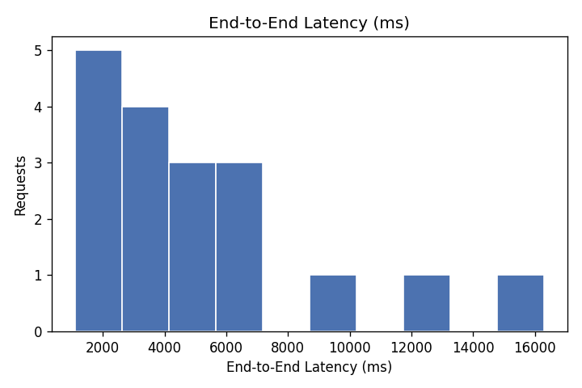
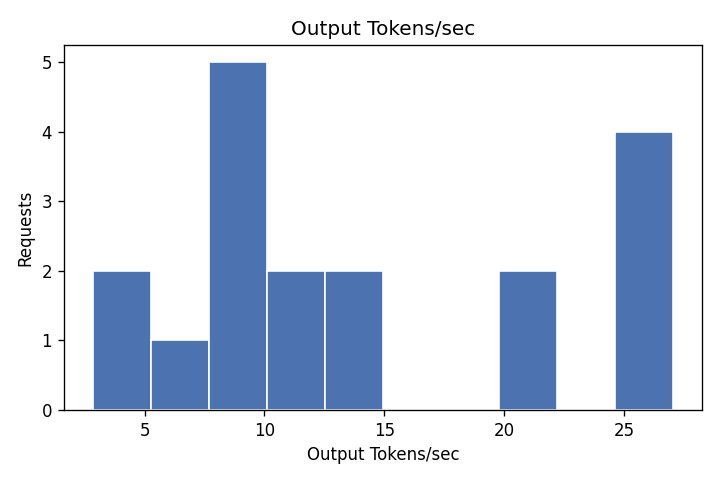

Status: completed
| Field | Value |
|---|---|
| OS | Windows (Windows-11-10.0.26300-SP0) |
| Python | 3.12.0 |
| CPU | 8 physical / 16 logical cores |
| RAM | 16.54 GB total, 2.41 GB available |
| GPU | NVIDIA GeForce RTX 3050 Laptop GPU (4096 MiB VRAM) |
| Disk | 58.59 GB free of 1022.55 GB |
| Field | Value |
|---|---|
| Model | qwen2.5-0.5b-instruct |
| Quantization | Q4_K_M |
| Context limit | 2048 tokens |
| Tokenizer | Qwen/Qwen2.5-0.5B-Instruct |
| Revision | 9217f5db79a29953eb74d5343926648285ec7e67 |
| Backend | llama-cpp |
| Git commit | c73c2ea7579fba717c964166c78620571e749440 |
| repeat | latency_p50_ms | latency_p95_ms | latency_p99_ms | ttft_p50_ms | tpot_p50_ms | throughput_p50_tps | requests_per_second | failure_rate |
|---|---|---|---|---|---|---|---|---|
| 0 | 3829.312200003187 | 5239.288500008115 | 5315.241780008364 | 805.5605000045034 | 32.80880141340146 | 18.969339389754385 | 0.2676567253248519 | 0.0 |
| 1 | 5163.138100004289 | 8665.848099990399 | 9090.718099990045 | 1019.3647499982035 | 38.6012000002004 | 11.042930104180972 | 0.20648992961862095 | 0.0 |
| 2 | 5980.5317499995 | 15170.756900006381 | 16071.225620007319 | 1338.944300005096 | 48.52003260511228 | 10.758895346340399 | 0.1379969856214614 | 0.0 |


